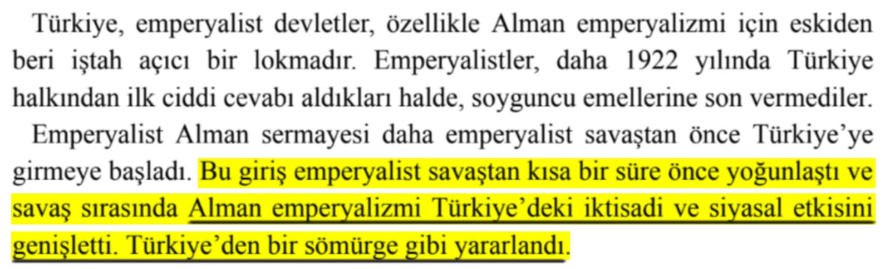

📌 Demiryolu yapımı için toplanan fonların yabancı gruplara verilmesi ve dolayısıyla paranın hariciyeye gitmesi:📕 Gülten Kazgan, Türkiye Ekonomisinde Krizler, s.56

📌 *Almanlar Türkiye'den bir sömürge gibi yararlandı.*📚 Doğu Perinçek, Komintern Belgelerinde Türkiye-2, Kemalist Cumhuriyet, s.58